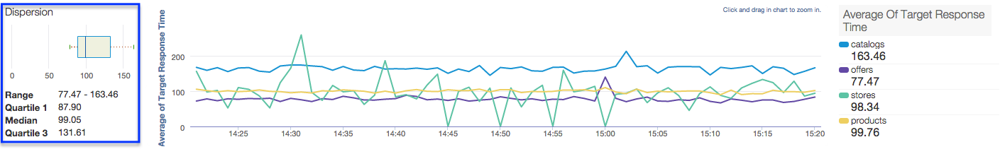
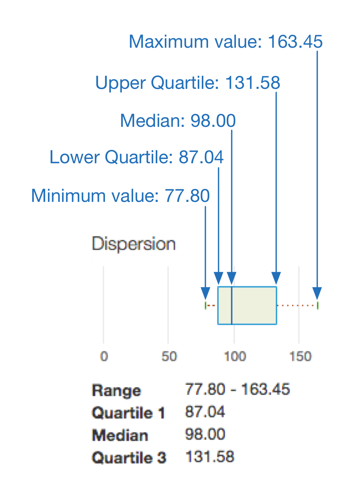

[toc]
Analytics dashboards help you see and detect changes in your API ecosystem at a glance. The ability to see what has changed over time helps you identify problems and take corrective action quickly.
For a quick overview of Analytics Services, who uses them, and why, see http://docs.apigee.com/node/94.
This topic explains how some of the common features you'll find in all the dashboards. After reading this topic, you will understand:
Has there been a sudden spike or drop off in API traffic? Which app developers are most successful? What is the adoption rate of your API among developers? Which API methods are most popular? The Edge Analytics dashboards are designed specifically to answer questions like these.
In the background, Apigee Edge collects information as data passes through your APIs. The dashboards provide a powerful way to use this data immediately. If you see something of interest in a graph or chart, an anomaly or sudden change, you can then drill deeper to uncover as much detail as you require. If you notice that a particular developer is experiencing a lot of errors or a sudden drop in traffic, you can contact that developer proactively. Dashboards give you insight into your APIs that allows you to take action.
Most of the Apigee Analytics dashboards are organized and function much like the one below. If you understand how to use this dashboard, you'll be comfortable navigating the others.
When you select a smaller aggregation interval the larger the dataset the dashboard is working with. Performance tends to increase when you select a larger aggregation interval. For example, performance is greater if you select By Day rather than By Minute.
Figure: Main Apigee dashboard
Dashboards have a set of common features, including time range and data aggregation settings, view togbgles, click and drag zooming on charts, mouse-over hover for more details on charts and other regions, and selectors for choosing the data to display in a chart. If you understand how to use one kind of dashboard, you'll be comfortable using the others.
For Cloud-based installations, data older than six months from the current date is not accessible by default. If you want to access data older than six months, contact Apigee Support.
For Private Cloud installations, the maximum time frame for running custom reports through the UI is 15 days. To increase that to 31 days:
Note: When you select a smaller aggregation interval the larger the dataset the dashboard is working with. Performance tends to increase when you select a larger aggregation interval. For example, performance is greater if you select By Day rather than By Minute.
The following figure highlights these feature areas:
[[{"type":"media","view_mode":"media_original","fid":"3626","attributes":{"alt":"","class":"media-image","height":"718","style":"font-size: 12px; width: 700px; height: 530px;","typeof":"foaf:Image","width":"949"}}]]
Here's another dashboard that includes additional features that you'll see in some other dashboards:
The following figure highlights each of these feature areas:
[[{"type":"media","view_mode":"media_original","fid":"3641","attributes":{"alt":"","class":"media-image","height":"520","style":"width: 700px; height: 377px;","typeof":"foaf:Image","width":"966"}}]]
If you see a dramatic rise (a "spike") or a dramatic drop in the traffic, you can get further detail, by checking the Investigate Anomalies checkbox on the API Proxies page and clicking on a point in the chart that corresponds to the spike or drop.
In response, you'll be able to view the traffic pattern before, at, and after the spike or drop. You can display the Investigate Anomalies data by any of the dimensions available by default in Apigee Edge as well as by custom dimensions. This gives you enhanced insight into the cause of a spike or drop and enables you to correlate it to factors such as developer, developer app, resource, client IP address, or target URL.

In addition to the Investigate Anomalies checkbox, there are two checkboxes displayed for the APIs on the API Proxies page or for an API on its detail page.
| Show Moving Averages | Check this checkbox to view a moving average for the API. You can check this checkbox for multiple APIs to view a moving average that includes the set of these APIs. A moving average is a series of averages taken over sucessive subsets of a complete set of data. It's especially useful in viewing trends. The moving average is displayed as a band whose limits are +-20% of the calculated moving average data points. |
| Show Alerts | Select this checkbox (on the API Proxies page) to view the number of times that the moving average for the API exceeded the +-20% limit. |
When an analytics report illustrates an average, as well as minimum and maximum values, we display an accompanying dispersion box plot, as called out in the custom report below.

At a glance, a dispersion box plot enables you to see the central tendency and dispersion of your data. A dispersion box plot surfaces the five key numbers when it comes to illustrating averaged analytics data:

In this example, the area within the box indicates the most typical average target response times experienced by your traffic — 50% of your traffic, to be exact.
The line extending from the left side of the box indicates the average target response times experienced by 25% of your traffic.
The line extending from the right of the box indicates the average target response times experienced by the remaining 25% of your traffic.
The longer these lines, or “whiskers,” the more extreme your outlier values.